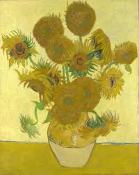
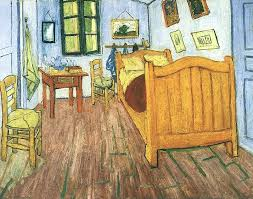

Most Famous Works



Vincent van Gogh (1853–1890) was a Dutch Post-Impressionist painter whose bold colors, expressive brushwork, and emotional depth made him one of the most influential figures in the history of Western art. Although he created more than 2,000 artworks—including around 900 paintings and 1,100 drawings—during a career that lasted barely a decade, Van Gogh struggled with poverty, mental illness, and little recognition in his lifetime. His works, such as Starry Night, Sunflowers, and The Bedroom, are celebrated today for their vibrant energy and ability to convey intense human emotion. Despite his tragic death at the age of 37, Van Gogh’s artistic vision transformed modern painting and continues to inspire artists and admirers worldwide.